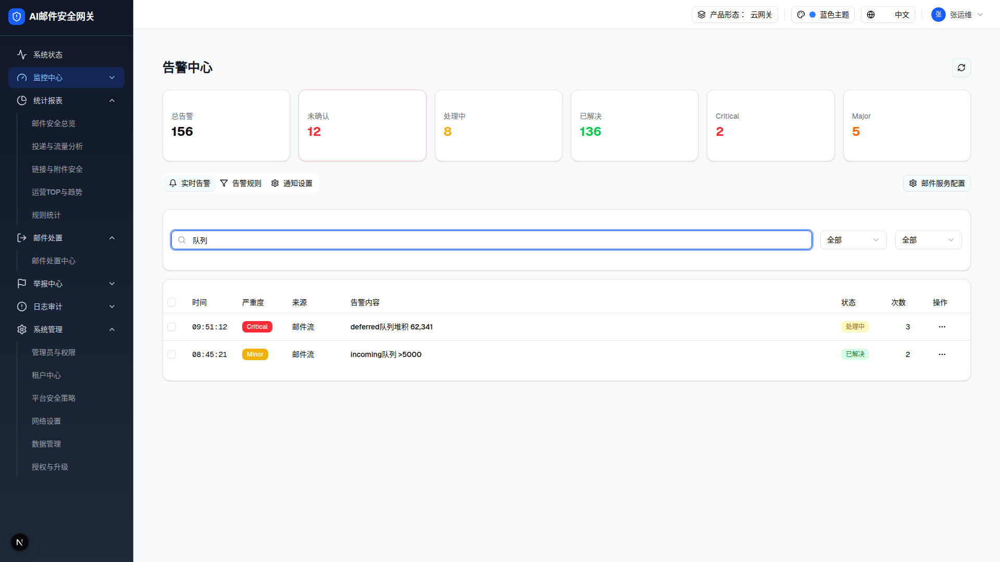

1 搜索「队列」后的过滤态（浏览器实测截图）

输入「队列」：6 行过滤为 2 行（deferred队列堆积 + incoming队列 >5000），徽标数 12→4
可交互预览（提取自运行中的 demo，搜索框已接线）
| 时间 | 严重度 | 来源 | 告警内容 | 状态 | 次数 | 操作 |
|---|
| 10:03:25 | Critical | 系统资源 | 数据目录使用率 96% | 未确认 | 1 | |
| 09:51:12 | Critical | 邮件流 | deferred队列堆积 62,341 | 处理中 | 3 | |
| 09:30:45 | Warning | 检测引擎 | RBL响应超时 >5s | 已确认 | 5 | |
| 09:15:33 | Major | 基础设施 | Kingbase主从延迟 45s | 未确认 | 1 | |
| 08:45:21 | Minor | 邮件流 | incoming队列 >5000 | 已解决 | 2 | |
| 08:30:10 | Info | 系统 | 备份任务完成 | 已解决 | 1 | |
在搜索框输入「队列」→ 6 行实时过滤为 2 行（deferred队列堆积 + incoming队列 >5000），大小写不敏感、无防抖；严重度/状态下拉与全选批量条为完整 JS 复刻 demo 前端逻辑。
过滤行为规则（源码 + 实测）
| 规则 | 说明 |
|---|
| 匹配字段 | 仅「告警内容」message（alert.message.toLowerCase().includes(query.toLowerCase())）；不匹配来源/时间/状态 |
| 大小写 | 不敏感（双端 toLowerCase） |
| 时机 | onChange 实时过滤，无防抖、无回车确认 |
| 组合 | 与严重度/状态筛选 AND 组合 |
| 空结果 | 仅余表头，无空态文案（差异 D-07） |
DOM 树比对结果（过滤前后，domstats 实测）
| 比对项 | 过滤前 | 搜索「队列」后 | 是否变化 |
|---|
| 表格行数 | 6 | 2 | 是（内存过滤） |
| 徽标数 | 12 | 4 | 是 |
| 统计卡 | 156/12/8/136/2/5 | 不变（统计不随筛选联动） | 否 |